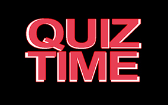

Introduction
What is Para Archery?
History
Safety in Archery
Take Quiz
Tools
Facilities and Equipment
Assistive Devices
Recursive Bow
Compound Bow
The Archer
Take Quiz
Stretching Exercises
Policies
Shooting Range
Rules
Scoring Method
Take Quiz
Prosthesis Devices and Equipment
Bow Arm
Draw Arm
Take Quiz
Key Terms
Shooting Distances
Steps of Shooting
11 Steps
Step 1
Step 2
Step 3
Step 4
Step 5
Step 6
Step 7
Step 8
Step 9
Step 10
Step 11
Take Quiz
Assessment
Coaching Position
Coach Roles
Adaptations for Equipment and Accessories
Disability Classifications
Coaching Visually Impaired Archers
Lining Up of a Visually Impaired Archers
Adapting Archery Instructions
Psychology
First Aid
About Us
Help
Highscores
×
Available Time:
60

Start Quiz
Question 1 xxx xxxx xxx xxx xxx xxx
All Done!
Final score
xx
GO BACK
RULES
Try to answer the following questions within the sixty (60) seconds time limit.
Keep in mind that incorrect answers will penalize your time by 3 seconds.